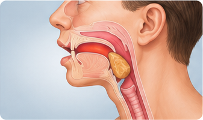

1. What Is Choking?
Choking occurs when an object blocks the airway, making it difficult or impossible to breathe. It can happen with food, small objects, or other items.
Common signs of choking:
- Difficulty breathing
- Inability to speak
- Weak or ineffective coughing
- Clutching the throat
- A panicked or distressed look